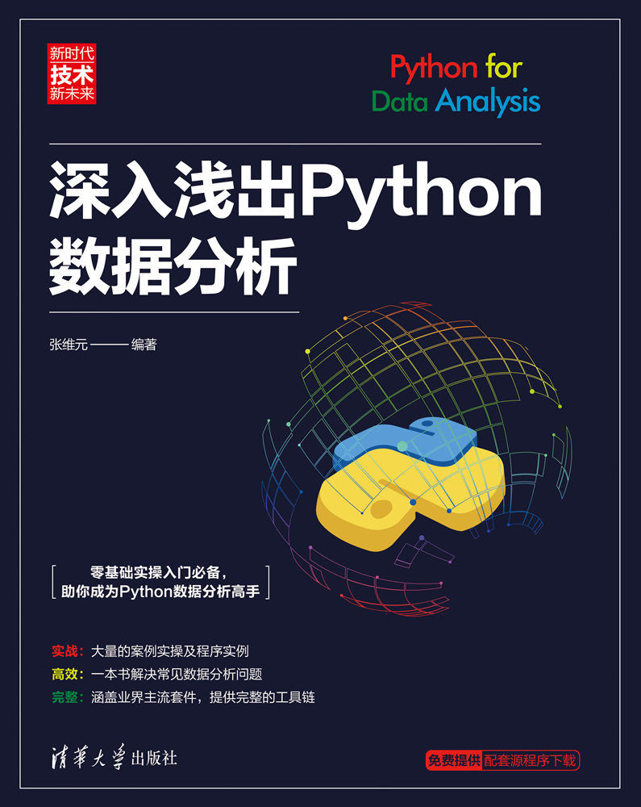

【文末赠书】30 个 Python 编程实用技巧
给大家安利一个免费且实用的 Python 刷题（面经大全）网站，👉点击跳转到网站。
直接跳到末尾 去评论区领书
今天，我给大家带来了一些基本的 Python 编程技巧。所有这些技巧都可以帮助您减少代码并优化执行。你可以在处理常规任务时轻松地在实时项目中使用它们。
技巧1 就地交换两个数字
Python 提供了一种在一行中进行赋值和交换的直观方式。请参考下面的例子。
1 | x, y = 10, 20 |
右边的赋值为一个新的元组播种。而左边的立即将那个（未引用的）元组解包到名称 <a> 和 <b>。
分配完成后，新元组将被取消引用并标记为垃圾收集。变量的交换也发生在最终。
技巧2 比较运算符的链接。
比较运算符的聚合是另一个有时可以派上用场的技巧。
1 | n = 10 |
技巧3 使用三元运算符进行条件赋值。
三元运算符是 if-else 语句的快捷方式，也称为条件运算符。
1 | [on_true] if [expression] else [on_false] |
以下是一些示例，您可以使用它们使代码紧凑简洁。
下面的语句与它的意思相同，即“如果 y 为 9，则将 10 分配给 x，否则将 20 分配给 x ”。如果需要，我们可以扩展运算符的链接。
1 | x = 10 if (y == 9) else 20 |
同样，我们可以对类对象做同样的事情。
1 | x = (classA if y == 1 else classB)(param1, param2) |
在上面的例子中，classA 和 classB 是两个类，其中一个类构造函数将被调用。
下面是一个没有的例子。加入评估最小数字的条件。
1 | def small(a, b, c): |
我们甚至可以在列表推导式中使用三元运算符。
1 | [m**2 if m > 10 else m**4 for m in range(50)] |
技巧4 使用多行字符串
基本方法是使用从 C 语言派生的反斜杠。
1 | multiStr = "select * from multi_row \ |
另一个技巧是使用三引号。
1 | multiStr = """select * from multi_row |
上述方法的共同问题是缺乏适当的缩进。如果我们尝试缩进，它会在字符串中插入空格。
所以最终的解决方案是将字符串拆分成多行，并将整个字符串括在括号中。
1 | multiStr= ("select * from multi_row " |
技巧5 将列表元素存储到新变量中
我们可以使用一个列表来初始化一个 no。的变量。在解压列表时，变量的数量不应超过编号。列表中的元素。
1 | testList = [1,2,3] |
技巧6 打印导入模块的文件路径
如果您想知道代码中导入的模块的绝对位置，请使用以下技巧。
1 | import threading |
技巧7 使用交互式“_”运算符
这是一个有用的功能，我们很多人都不知道。
在 Python 控制台中，每当我们测试表达式或调用函数时，结果都会发送到临时名称 _（下划线）。
1 | 2 + 1 |
“_”引用上次执行的表达式的输出。
技巧8 字典/集合理解
就像我们使用列表推导一样，我们也可以使用字典/集合推导。它们易于使用且同样有效。这是一个例子。
1 | testDict = {i: i * i for i in xrange(10)} |
注意 -两个语句中只有 <:> 的区别。此外，要在 Python3 中运行上述代码，请将
技巧9 调试脚本
我们可以在
1 | import pdb |
我们可以在脚本的任何地方指定
技巧10 设置文件共享
Python 允许运行 HTTP 服务器，您可以使用它从服务器根目录共享文件。下面是启动服务器的命令。
Python 2
1 | python -m SimpleHTTPServer |
Python 3
1 | python3 -m http.server |
以上命令将在默认端口 8000 上启动服务器。您还可以通过将自定义端口作为最后一个参数传递给上述命令来使用自定义端口。
技巧11 在 Python 中检查对象
我们可以通过调用 dir() 方法来检查 Python 中的对象。这是一个简单的例子。
1 | test = [1, 3, 5, 7] |
1 | ['__add__', '__class__', '__contains__', '__delattr__', '__delitem__', '__delslice__', '__doc__', '__eq__', '__format__', '__ge__', '__getattribute__', '__getitem__', '__getslice__', '__gt__', '__hash__', '__iadd__', '__imul__', '__init__', '__iter__', '__le__', '__len__', '__lt__', '__mul__', '__ne__', '__new__', '__reduce__', '__reduce_ex__', '__repr__', '__reversed__', '__rmul__', '__setattr__', '__setitem__', '__setslice__', '__sizeof__', '__str__', '__subclasshook__', 'append', 'count', 'extend', 'index', 'insert', 'pop', 'remove', 'reverse', 'sort'] |
技巧12 简化 if 语句
要验证多个值，我们可以通过以下方式进行。
1 | if m in [1,3,5,7]: |
代替：
1 | if m==1 or m==3 or m==5 or m==7: |
或者，我们可以使用 ‘{1,3,5,7}’ 而不是 ‘[1,3,5,7]’ 作为 ‘in’ 运算符，因为 ‘set’ 可以通过 O(1) 访问每个元素。
技巧13 在运行时检测 Python 版本
有时，如果当前运行的 Python 引擎低于支持的版本，我们可能不想执行我们的程序。为此，您可以使用以下代码片段。它还以可读格式打印当前使用的 Python 版本。
1 | import sys |
或者，您可以在上面的代码中使用sys.version_info >= (3, 5)替换sys.hexversion!= 50660080。这是一位知情读者的建议。
在 Python 2.7 上运行时的输出。
1 | Python 2.7.10 (default, Jul 14 2015, 19:46:27) |
在 Python 3.5 上运行时的输出。
1 | Python 3.5.1 (default, Dec 2015, 13:05:11) |
技巧14 组合多个字符串
如果您想连接列表中所有可用的标记，请参见以下示例。
1 | test = ['I', 'Like', 'Python', 'automation'] |
现在，让我们从上面给出的列表中的元素创建一个字符串。
1 | print ''.join(test) |
技巧15 反转 string/list 的四种方法
反转列表本身
1 | testList = [1, 3, 5] |
在循环中迭代时反转
1 | for element in reversed([1,3,5]): print(element) |
反转一个字符串
1 | "Test Python"[::-1] |
这使输出为“nohtyP tseT”
使用切片反转列表
1 | [1, 3, 5][::-1] |
上面的命令将输出 [5, 3, 1]。
技巧16 玩枚举
使用枚举器，在循环中很容易找到索引。1
2
3
4
5
6
7testlist = [10, 20, 30]
for i, value in enumerate(testlist):
print(i, ': ', value)
#1-> 0 : 10
#2-> 1 : 20
#3-> 2 : 30
技巧17 在 Python 中使用枚举。
我们可以使用以下方法来创建枚举定义。1
2
3
4
5
6
7
8
9
10
11
12class Shapes:
Circle, Square, Triangle, Quadrangle = range(4)
print(Shapes.Circle)
print(Shapes.Square)
print(Shapes.Triangle)
print(Shapes.Quadrangle)
#1-> 0
#2-> 1
#3-> 2
#4-> 3
技巧18 从函数返回多个值。
支持此功能的编程语言并不多。但是，Python 中的函数确实会返回多个值。
请参考以下示例以查看它的工作情况。1
2
3
4
5
6
7
8# 返回多个值的函数。
def x():
return 1, 2, 3, 4
# 调用上述函数。
a, b, c, d = x()
print(a, b, c, d)
-> 1 2 3 4
技巧19 使用 splat 运算符解包函数参数。
splat 运算符提供了一种解压参数列表的艺术方式。为清楚起见，请参阅以下示例。
1 | def test(x, y, z): |
技巧20 使用字典来存储 switch。
我们可以制作一个字典存储表达式。1
2
3
4
5
6
7
8
9
10stdcalc = {
'sum': lambda x, y: x + y,
'subtract': lambda x, y: x - y
}
print(stdcalc['sum'](9,3))
print(stdcalc['subtract'](9,3))
#1-> 12
#2-> 6
技巧21 计算一行中任意数字的阶乘。
Python 2.x.
1 | result = (lambda k: reduce(int.__mul__, range(1,k+1),1))(3) |
Python 3.x.
1 | import functools |
技巧22 查找列表中出现频率最高的值。
1 | test = [1,2,3,4,2,2,3,1,4,4,4] |
技巧23 重置递归限制。
Python 将递归限制限制为 1000。我们可以重置它的值。1
2
3
4
5
6
7
8
9
10import sys
x=1001
print(sys.getrecursionlimit())
sys.setrecursionlimit(x)
print(sys.getrecursionlimit())
#1-> 1000
#2-> 1001
请仅在需要时应用上述技巧。
技巧24 检查对象的内存使用情况。
在 Python 2.7 中，32 位整数消耗 24 字节，而在 Python 3.5 中使用 28 字节。为了验证内存使用情况，我们可以调用 <getsizeof> 方法。
Python 2.7.
1 | import sys |
Python 3.5.
1 | import sys |
技巧25 使用 __slots__ 减少内存开销。
你有没有观察到你的 Python 应用程序消耗了大量资源，尤其是内存？这是使用<__slots__>类变量在一定程度上减少内存开销的一种技巧。1
2
3
4
5
6
7
8
9
10
11
12
13
14
15
16
17
18
19
20
21
22
23
24import sys
class FileSystem(object):
def __init__(self, files, folders, devices):
self.files = files
self.folders = folders
self.devices = devices
print(sys.getsizeof( FileSystem ))
class FileSystem1(object):
__slots__ = ['files', 'folders', 'devices']
def __init__(self, files, folders, devices):
self.files = files
self.folders = folders
self.devices = devices
print(sys.getsizeof( FileSystem1 ))
#In Python 3.5
#1-> 1016
#2-> 888
显然，您可以从结果中看到内存使用量有所节省。但是当一个类的内存开销不必要地大时，你应该使用 __slots__ 。仅在分析应用程序后执行此操作。否则，您将使代码难以更改并且没有真正的好处。
技巧26 Lambda 模仿打印功能。
1 | import sys |
技巧27 从两个相关序列创建字典。
1 | t1 = (1, 2, 3) |
技巧28 在线搜索字符串中的多个前缀。
1 | print("http://www.baidu.com".startswith(("http://", "https://"))) |
技巧29 形成一个统一的列表，不使用任何循环。
1 | import itertools |
如果您有一个包含嵌套列表或元组作为元素的输入列表，请使用以下技巧。但是，这里的限制是它使用了 for 循环。1
2
3
4
5
6
7
8
9
10
11
12
13
14
15def unifylist(l_input, l_target):
for it in l_input:
if isinstance(it, list):
unifylist(it, l_target)
elif isinstance(it, tuple):
unifylist(list(it), l_target)
else:
l_target.append(it)
return l_target
test = [[-1, -2], [1,2,3, [4,(5,[6,7])]], (30, 40), [25, 35]]
print(unifylist(test,[]))
#输出=> [-1, -2, 1, 2, 3, 4, 5, 6, 7, 30, 40, 25, 35]
统一包含列表和元组的列表的另一种更简单的方法是使用 Python 的 < more_itertools > 包。它不需要循环。只需执行 < pip install more_itertools >，如果还没有的话。1
2
3
4
5
6
7import more_itertools
test = [[-1, -2], [1, 2, 3, [4, (5, [6, 7])]], (30, 40), [25, 35]]
print(list(more_itertools.collapse(test)))
#输出=> [-1, -2, 1, 2, 3, 4, 5, 6, 7, 30, 40, 25, 35]
技巧30 在 Python 中实现真正的 switch-case 语句。
这是使用字典来模仿 switch-case 构造的代码。1
2
3
4
5
6
7
8
9
10def xswitch(x):
return xswitch._system_dict.get(x, None)
xswitch._system_dict = {'files': 10, 'folders': 5, 'devices': 2}
print(xswitch('default'))
print(xswitch('devices'))
#1-> None
#2-> 2
🥇 评论区抽粉丝送书啦
书籍：赠送 3 本《深入浅出Python数据分析》，更多介绍和目录可以点击下面链接了解。

